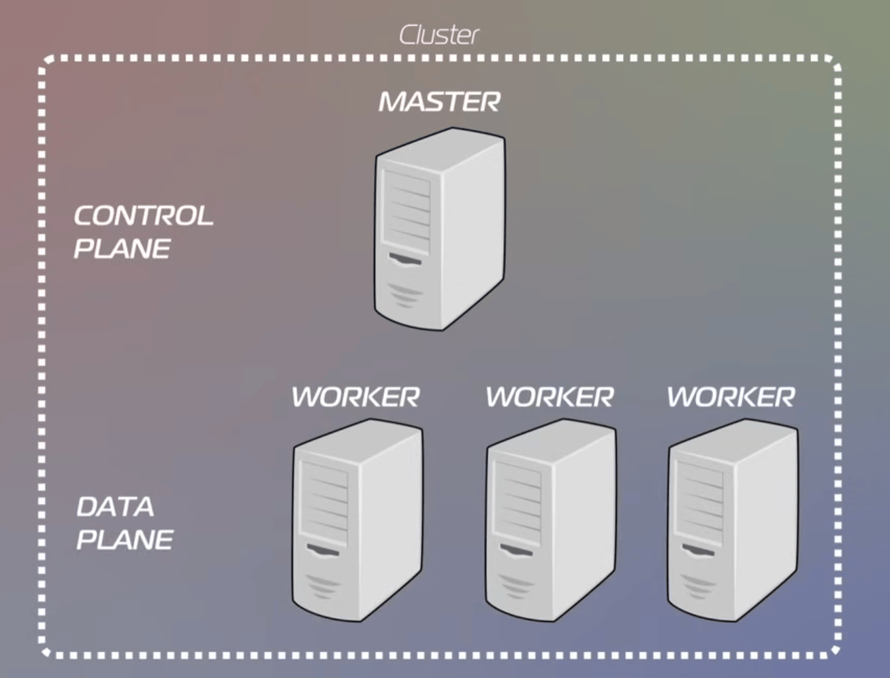
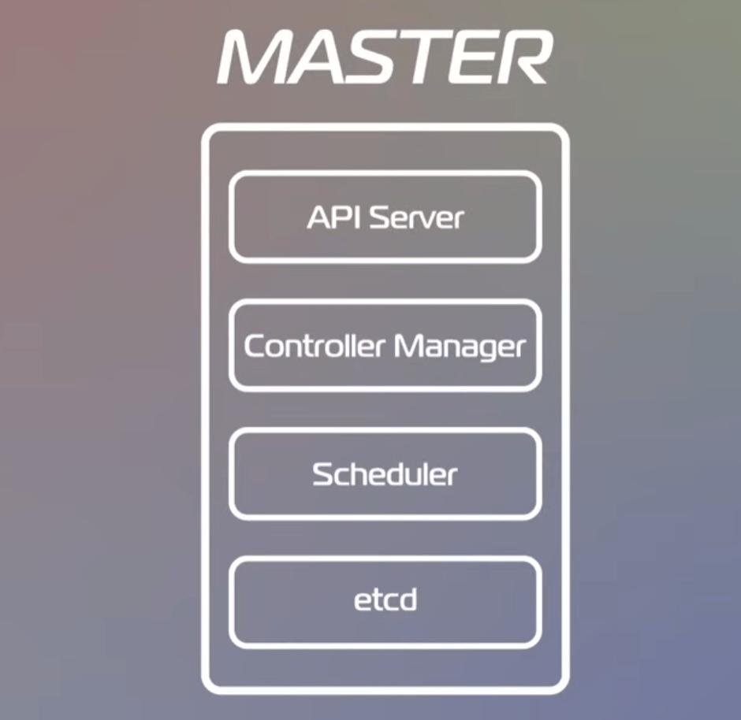
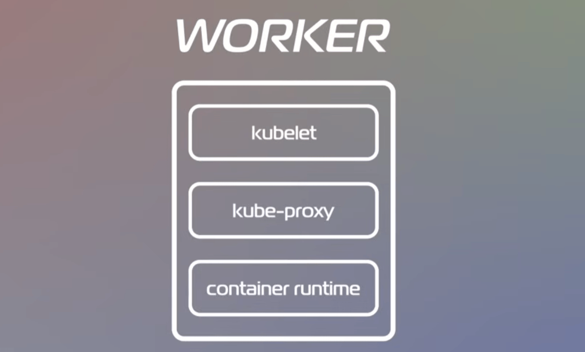
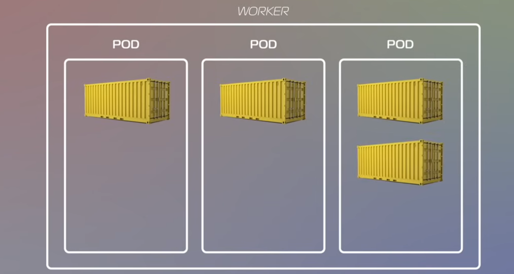
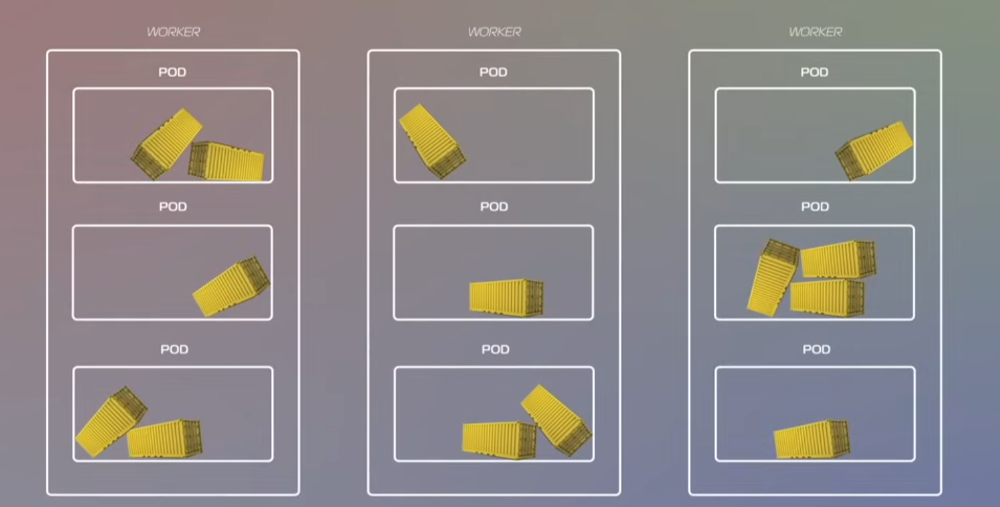
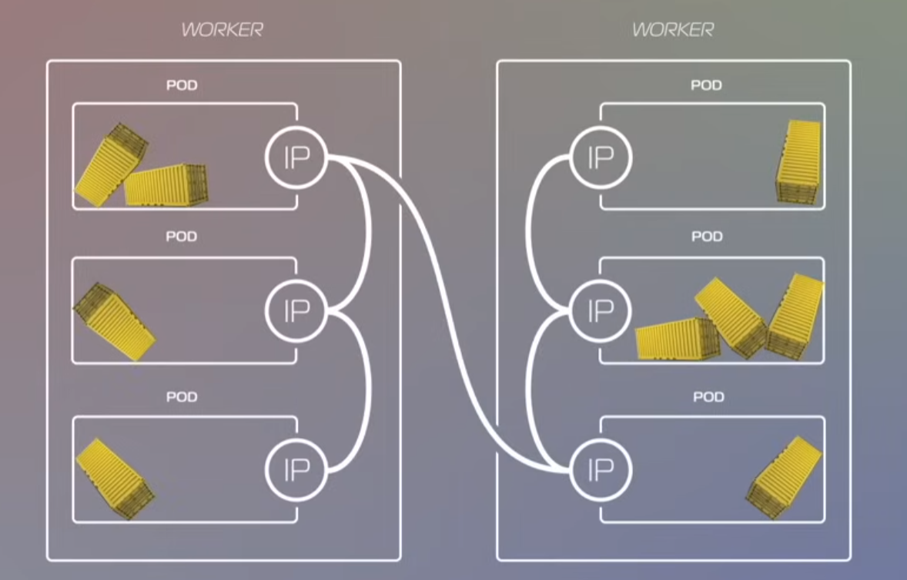
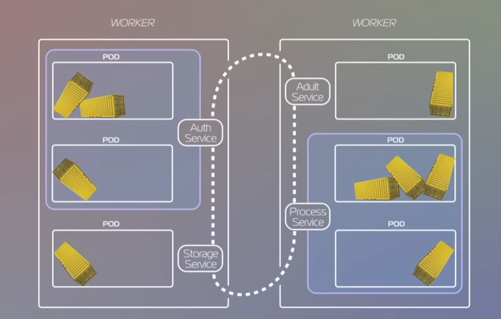

Kubernetes
Вопросы по Kubernetes и оркестрации контейнеров.
-
Kubernetes (k8s)
Kubernetes — оркестратор контейнеров. Он управляет развёртыванием, масштабированием и самовосстановлением сервисов в кластере машин и работает по модели desired state: ты описываешь желаемое состояние в манифестах, а k8s поддерживает его автоматически.

Структура кластера: есть control plane и data plane. В control plane находятся master-ноды, в data plane — worker-ноды. K8s разделён на control plane (master-ноды) и worker-ноды. На master-нодах — мозги и состояние, на worker-нодах — реальная нагрузка (Pods/контейнеры).
-
Строение кластера
Master-нода — мозг кластера, управляет всеми остальными. Мастер нода содержит несколько процессов для запуска и поддержания всего кластера:

- API Server — входная точка: все изменения кластера идут через него. Способ взаимодействия с кластером. Если нужно что-то сделать, то запрос идет в этот компонент, он проверяет запрос и передает дальше.
- Controller Manager — следит за расхождением между current state и desired state, инициирует исправления. Проверяет, все ли в порядке, а если что-то не так, то он принимает меры. У него есть план, которого все в кластере должны придерживаться — желаемое состояние (desired state) — то, как все должно работать в идеале. Задача controller manager-а как раз в том, чтобы приводить текущее состояние (current state) в желаемое (desired state).
- Scheduler — назначает Pods на конкретные worker-ноды с учётом ресурсов и ограничений. Планирует то, как должны использоваться контейнеры в различных нодах кластера в зависимости от загруженности ноды и доступности серверных мощностей.
- etcd — key–value хранилище состояния кластера. Там лежит информация, которая отражает текущее состояние кластера (конфигурационные данные, статус ноды, статусы контейнеров). Если что-то упадет, то эти данные помогут быстро восстановить систему.
Тут сосредоточена вся мощь кластера, тут будут крутиться все контейнеры. Worker-нода состоит из следующих компонентов:

- kubelet — агент ноды, выполняет инструкции control plane и общается с runtime. Отвечает за общение с мастером. Получает инструкции о том, что и как должно работать на этой конкретной ноде. Еще он общается со вторым компонентом worker-node: с исполняемой средой контейнера (container runtime).
- kube-proxy — сервисная сеть и балансировка внутри кластера. Выполняет сетевую роль, отвечает за коммуникацию и балансировку внутренней сети.
- Container runtime — запускает/останавливает контейнеры, управляет образами и ресурсами.
-
Pod
POD — это минимальный элемент k8s, с которым мы можем взаимодействовать. POD — обертка над контейнером, обычно в одном PODе крутится один контейнер, но если нужно засунуть туда $>1$, то так тоже можно сделать.
Эти POD-ы распределены по всем нашим worker-нодам.

На каждом воркере обычно запускается несколько различных POD-ов.

Этими POD-ами кубер как раз и жонглирует в процессе работы программы:
- Если на какой-то компонент увеличивается нагрузка, поднимаем еще нужных POD-ов,
- и стопаем их, когда они не нужны,
- или пересоздаем их, когда нода, на которой они запущены, решила упасть,
- если что-то случилось с самим контейнером внутри POD-а, то POD позаботится о том, чтобы поднять его снова.
ПОДам нужно общаться между собой и с внешним миром, поэтому у каждого есть свой IP-адрес, по которому к ним можно достучаться.

-
Service
Важный момент: ПОДы могут перезапускаться в процессе программы, и их IP будет меняться.
Для решения этой проблемы на помощь приходит компонент Service:
- Он логически объединяет ПОДы в группы, которые, например, принадлежат одному сервису.
- Объединив их, он выдает этой группе постоянный IP.
- Обеспечивает балансировку нагрузки: ПОДы обращаются к Service, а он по-умному распределяет запросы между своими ПОДами.

-
Манифесты и декларативная настройка
Настройка происходит при помощи запроса к API Server, который лежит на master-node.
- В таком запросе мы передаем файл конфигурации (
yaml) - Там описываем все, что нам нужно, декларативное описание того, как должна выглядеть наша система
Ты описываешь желаемую конфигурацию, а control plane приводит систему к ней и поддерживает.
Конфигурация шаблона, по которому k8s будет поддерживать нужное число Pod-ов (реплик). По сути, это шаблон, по которому будут создаваться наши ПОДы. Это и есть desired state, к которому k8s будет стремиться привести систему.
apiVersion: apps/v1 kind: Deployment metadata: name: nginx-deployment labels: app: nginx spec: replicas: 3 selector: matchLabels: app: nginx template: metadata: labels: app: nginx spec: containers: - name: nginx image: nginx:1.14.2 ports: - containerPort: 80Будет запущено 3 POD-а:
- Каждый будет содержать контейнер, основанный на образе
nginx - Если controller manager увидит в current state, что POD-ы упали — появилось несоответствие, и он пойдет ее исправлять
- В таком запросе мы передаем файл конфигурации (
-
Docker Compose vs Kubernetes
- Compose — многоконтейнерное приложение на одной машине: удобно для локалки/простых деплоев.
- Kubernetes — оркестрация на многих машинах: расписание, автолечение, сервисная сеть, масштабирование.